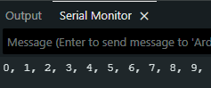
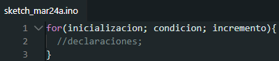
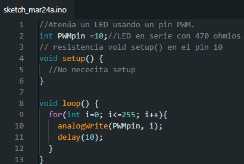
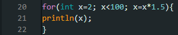
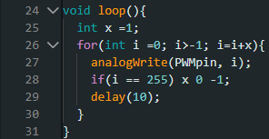

Estructuras De Control


For
La instrucción `for` se utiliza para repetir un bloque de instrucciones encerrado entre llaves. Generalmente, se usa un contador de incremento para incrementar y finalizar el bucle. La instrucción `for` es útil para cualquier operación repetitiva y se usa a menudo en combinación con arreglos para trabajar con conjuntos de datos o pines.El encabezado del bucle `for` consta de tres partes:

La inicialización se realiza primero y exactamente una vez. En cada iteración del bucle, se comprueba la condición; si es verdadera, se ejecuta el bloque de instrucciones y el incremento, y luego se vuelve a comprobar la condición. Cuando la condición se vuelve falsa, el bucle finaliza.
Ejemplo:

Consejos de programacion
El bucle `for` de C es mucho más flexible que el bucle `for` de otros lenguajes de programación, incluido BASIC. Se pueden omitir cualquiera o todos los tres elementos del encabezado, aunque los puntos y coma son obligatorios. Además, las instrucciones de inicialización, condición e incremento pueden ser cualquier instrucción válida de C con variables independientes y usar cualquier tipo de dato de C, incluidos los números de coma flotante. Este tipo de instrucciones `for` poco comunes pueden proporcionar soluciones a algunos problemas de programación poco frecuentes. Por ejemplo, usar una multiplicación en la línea de incremento generará una progresión logarítmica:
Genera: 2, 3, 4, 6, 9, 13, 19, 28, 42, 63, 94
Otro ejemplo: atenuar la luz de un LED con un bucle for:
